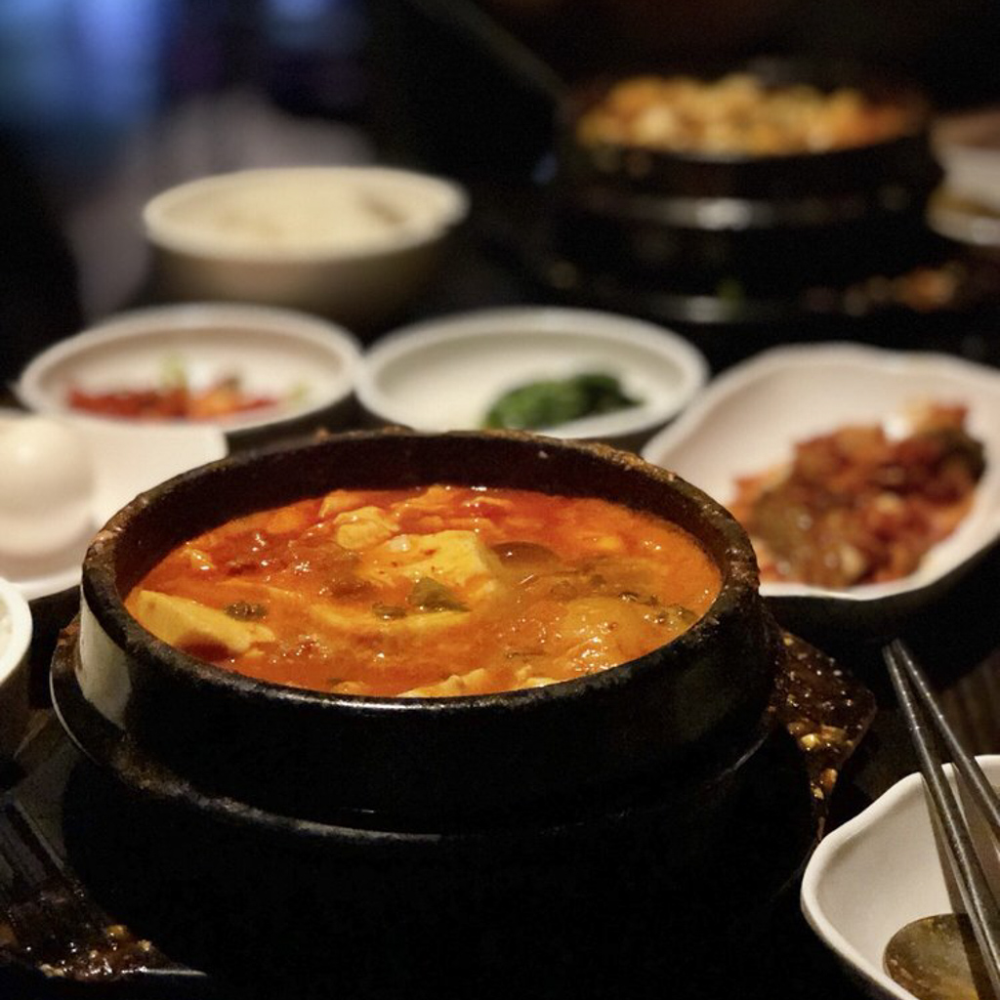
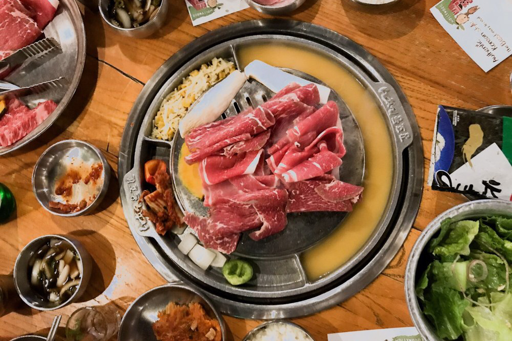
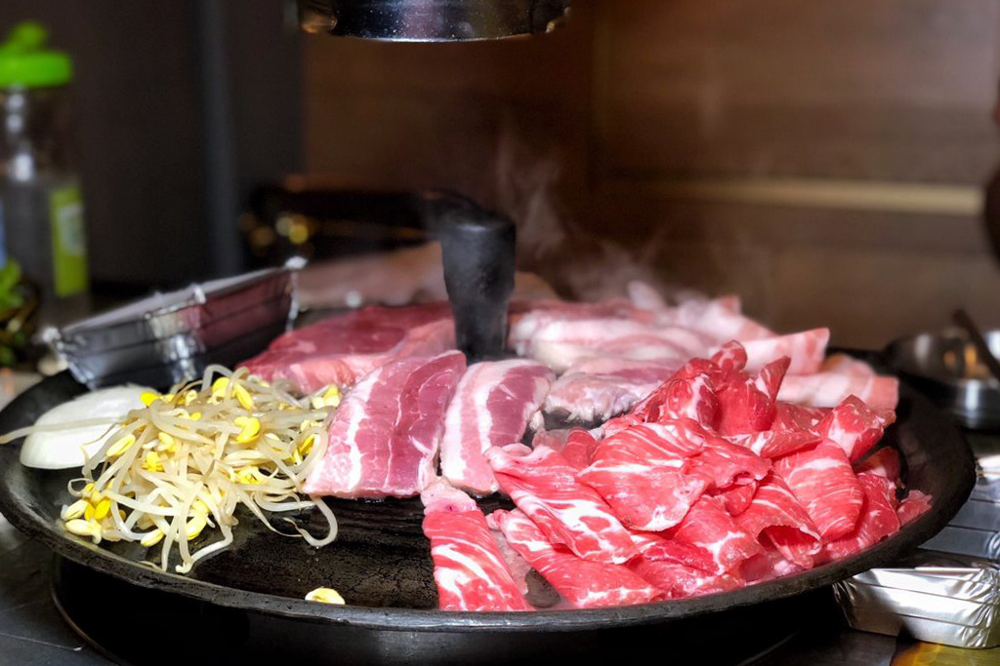
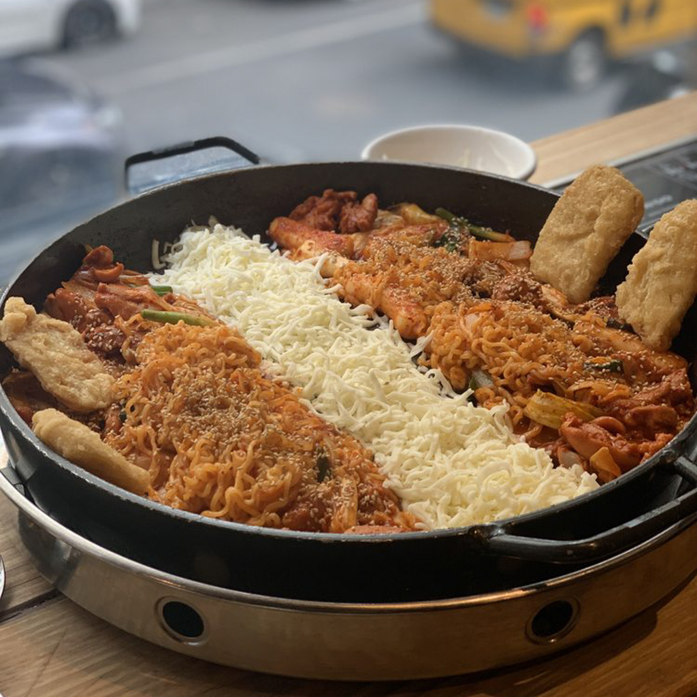
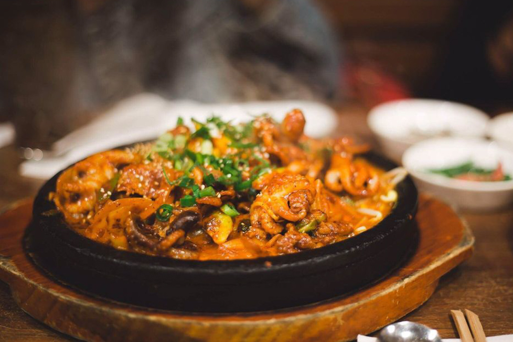
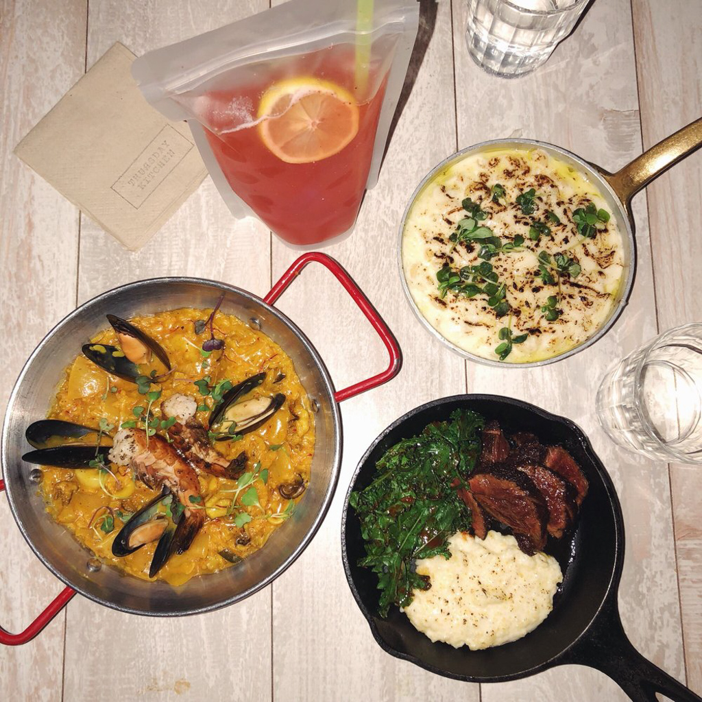
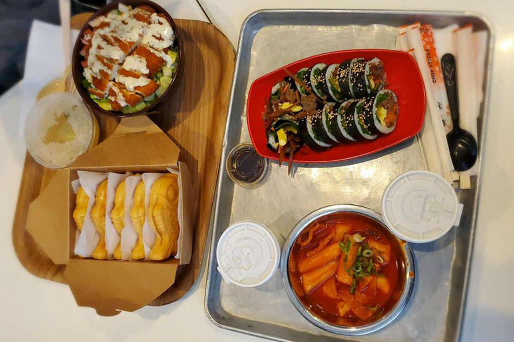
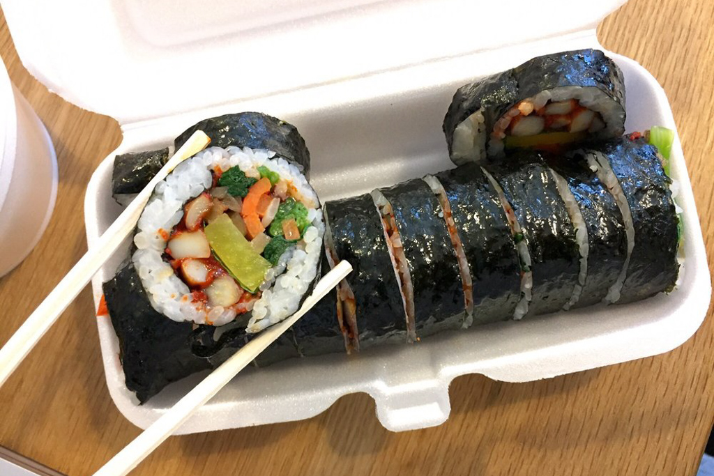
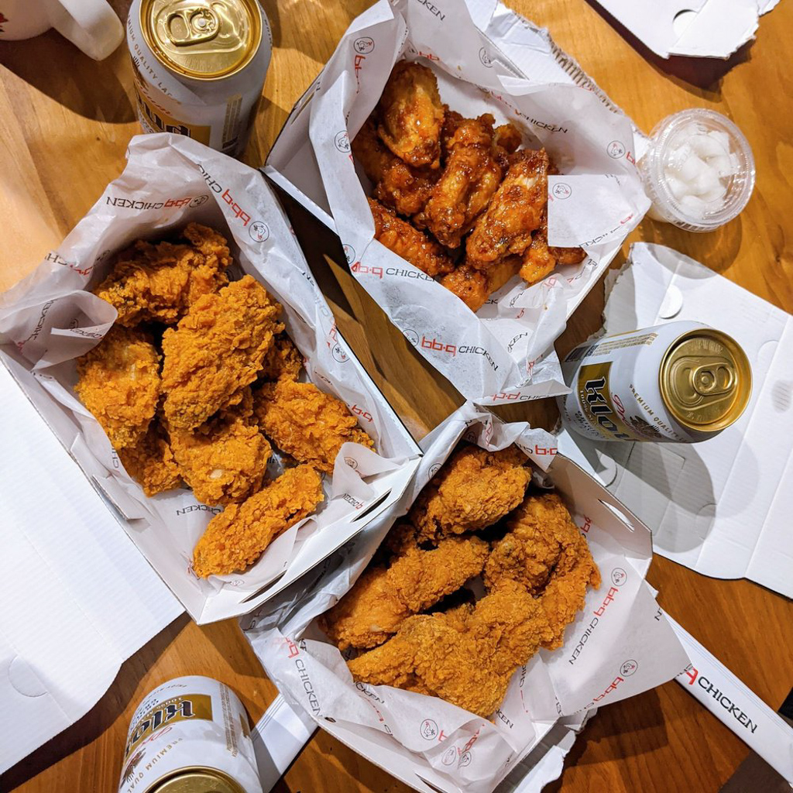
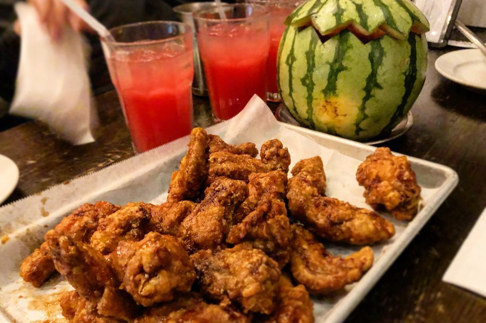

Our Favorite Korean Restaurants in NYC
Mar 14 - Written by Bonnie and Emily
After moving to New York City, Korean food became a staple in our diet and Koreatown became one of our most visited spots for food that first year we lived there.
However, the city has such a large abundance of Korean restaurants in Koreatown but there are also some scattered throughout the city that it's never hard to find a nice spot to grab a bite of Korean BBQ or some Korean fried chicken. Since we’ve been on the hunt for some delicious Korean spots for the past few years, we thought we’d share some of our favorite restaurants so far!
Favorite Korean Soup
BCD Tofu House
BCD Tofu House is the best restaurant to stop by on a cold or rainy day for a warm bowl of their delicious tofu soup, soondubu. Their soondubu combo meals provide rice, soup, and a side of delicious marinated meat of your choice. Not only is their soup a delicious way to warm your tummy but also have such a large variety of options in terms of toppings, spice levels, and flavors that you can keep going back for something new each time. Most of all, like most Korean restaurants, they fill your table up with some of their freshly made side dishes that provide even more flavor to your meal. The best part is that BCD Tofu House is open 24 hours for you to meet your soup cravings at any time of the day!
Favorite KBBQ Spot
Kang Ho Dong Baek Jong
Kang Ho Dong Baek Jong is probably one of the most authentic Korean BBQ restaurants that we’ve been to. Since this restaurant was opened by a popular Korean celebrity, there are a few different branches throughout the country. Although the prices at this restaurant are definitely a little pricey, it's definitely a great spot to splurge for a nice celebration dinner. Their menu also has combo options that include lettuce wraps and sauces to accompany with your choice of meat. On top of that, our favorite part of their BBQ experience includes the small crevices in the grill that are filled one side with mozzarella and corn and the other side with egg and kimchi that are perfect for snacking while waiting for your meat to cook. If you ever get the chance to check out Kang Ho Dong Baek Jong, definitely take some time to check out their celebrity wall of photos to see who else has stopped by at this spot too!
Lets Meat BBQ
If you love meat, definitely check out Lets Meat for the best all you can eat Korean BBQ in the city. You can choose between two options, their classic and signature menu options. Our favorite is to do their late night special which is a discounted price for dining in after 10 PM, that way you can get the most out of your money. No matter which option you choose, you won't be disappointed by the variety of meat you can choose from. If it’s your first time, we recommend you try at least one of everything to really get a sense of what you like and don't like from their menu, but a few of our favorites to order include the beef thin sliced brisket, Berkshire pork belly, and the pork shoulder steak. No matter what you choose, it’ll most definitely be delicious, especially when paired with their side dishes and turned into a lettuce wrap. The next time you’ve got a craving for some Korean BBQ, definitely check out let’s meat where you can eat all the meat your heart desires!
Hong Chun Cheon
This is the perfect place to satisfy your craving for something spicy and cheesy. It’s the ideal comfort food for any occasion really but most ideal for a cold or chilly day as the heat from all the spices will surely warm you up. This is a great place to meet up with friends and share a meal together (quite literally as this dish is served in a large pan right in the middle of the table). They don't have a large menu but they do offer different dakgalbi to choose from and the best part is when you’re nearly done with your meal and you add in the rice to make some fried rice, it’s like getting two meals for one! We love coming here and getting their cheese dakgalbi whenever we’re craving something both spicy and cheesy. You can’t skip the cheese as it balances out the heat of the chicken and best of all, that ever so satisfying cheese pull makes it worth all the extra calories. If cheese and spicy chicken sound good to you, you should check this place out!
Favorite Korean A la Carte
Five Senses
Fives Sense is one of the few a la carte Korean restaurants that we frequent often in the city that is also quite popular among residents. Their restaurant is always filled with people waiting for seats so definitely make sure to get there a little earlier! Since their restaurant is a la carte, their menu has a large variety of dishes that include anything from soups, noodles, and rice dishes. Five Senses is definitely a great spot to do a family style meal with friends to order a variety of dishes to share. Our favorite dishes include the Kimchi Fried rice and the stir fried baby octopus and Berkshire pork that are perfect for any type of weather! They also provide a lunch special menu on weekdays where you can order some of their most popular dishes for a reduced price! Definitely try this restaurant out if you’re ever in the area, it really won’t disappoint!
Thursday Kitchen
If you’re ever curious about a Korean style tapa experience, this would be the restaurant for you to try! Thursday Kitchen has great ambiance and is a great place to hang out with friends while chatting and munching on some of their delicious tapas. Their menu has a variety of fusion foods including some of our favorites: eel tacos, kimchi paella, and truffle mac and cheese. On top of their yummy food dishes, they are also quite known for their cocktails served in their Capri Sun esque clear pouches with light up ice cubes. Thursday Kitchen was definitely a common spot for us to eat at on our days at the NYU campus and became one of our go to spots for a quick drink with friends as well.
Favorite Korean Curry
Abiko Curry

Abiko Curry is the ideal comfort food spot for those days where you just want a big bowl of rice or noodles covered in a very rich and flavorful curry. They offer a variety of curry and toppings to choose from but we often choose one of their sets. Our go to is their Pork Set which is their pork curry with rice, a crispy pork cutlet, and a drink. You also get to choose the spice level for your curry and beware that their spicy curry is quite spicy so only get that if you can take the heat. No matter what you choose to order, it will be a very filling and satisfying meal.
Favorite Cheap Eats
Food Gallery 32
Food Gallery 32 was definitely a common spot for us to go in Koreatown especially on our college student budgets. This is one of the best spots to head to for your favorite dishes at a reasonable price especially in New York City. Food Gallery 32 has a huge range of restaurants serving all kinds of things from bubble tea, Korean noodle dishes, to Korean snack foods. Some of our favorite dishes to get include the jajangmyeon at the Seoul restaurant booth and the spicy Korean rice cake at the Gochujang restaurant booth. What’s best about eating a food court is not only their decent prices but also the opportunity to eat all the cravings you might have in one go! Take a group of your friends and buy delicious dishes from all booths to share. This was definitely a great hang out place for us and our friends and at the end of your meal you can wrap it up with a delicious custard filled pastry at Delimanjoo!
E-Mo
E-Mo is a small standing only take out restaurant tucked away at the edge of Korea town. But don’t let how small their restaurant space is fool you! Their main specialty is kimbap and that’s the only item they sell on their menu, but their large variety of toppings certainly makes up for it. The lovely auntie that works at E-Mo will make your kimbap, a version of Korean sushi, on the spot so that the rice and toppings are fresh when you receive your order. Not only does your meal come with your choice of kimbap but also a complimentary bowl of miso soup to go along with your meal. Most of all, this is a great spot to grab a quick bite for a very affordable price. Just don’t forget to bring some cash!
Favorite Chicken Spot
BBQ Olive Chicken
If you’re craving Korean fried chicken, this is the place to go. Whether you’re looking to just grab something quick to go or sit down with some friends, they got you covered. From something as simple as their original fried chicken to their flavored options, they have a wide selection to choose from that’ll surely satisfy your craving. Our go to is their honey garlic wings but we also like their golden olive spicy chicken and soy garlic chicken. The chicken is perfectly fried, crispy on the outside and juicy on the inside coated with just the right amount of sauce. We’ve been getting our Korean fried chicken fix from here for many years now and it never disappoints. This is the perfect spot in Koreatown for a quick bite or a late night snack!
Boka
If you’re looking for some Korean fried chicken and Korea town is too far, check out Boka in the East Village for your Korean fried chicken fix. They don’t offer as large of a variety of flavors as BBQ Olive Chicken does but both the flavors they do offer are equally delicious. They have the two classic flavors you can find at other Korean restaurants, soy garlic and spicy. You can’t go wrong with the soy garlic, but if you can take the heat, the spicy wings have just the right amount of spice to have you wanting more. If you aren’t feeling fried chicken, Boka offers a wide selection of other Korean dishes that are equally delicious making this a great spot for those who can’t decide what kind of Korean food they want!
There are so many Korean restaurants all with different price ranges that there is surely something here that will fit everyone's budget. Whether it's a day you want to splurge on some Korean BBQ or a day where you just want a good meal for under $10, we have you covered. So, with this list of amazing places in the city, we hope you’ll find ones you like and make them your go to spots like we have.